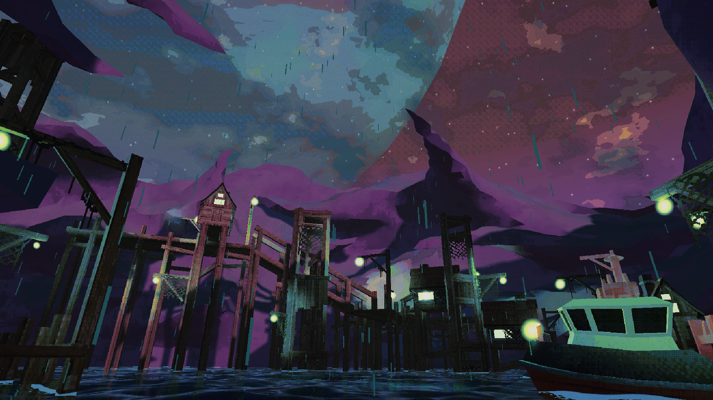
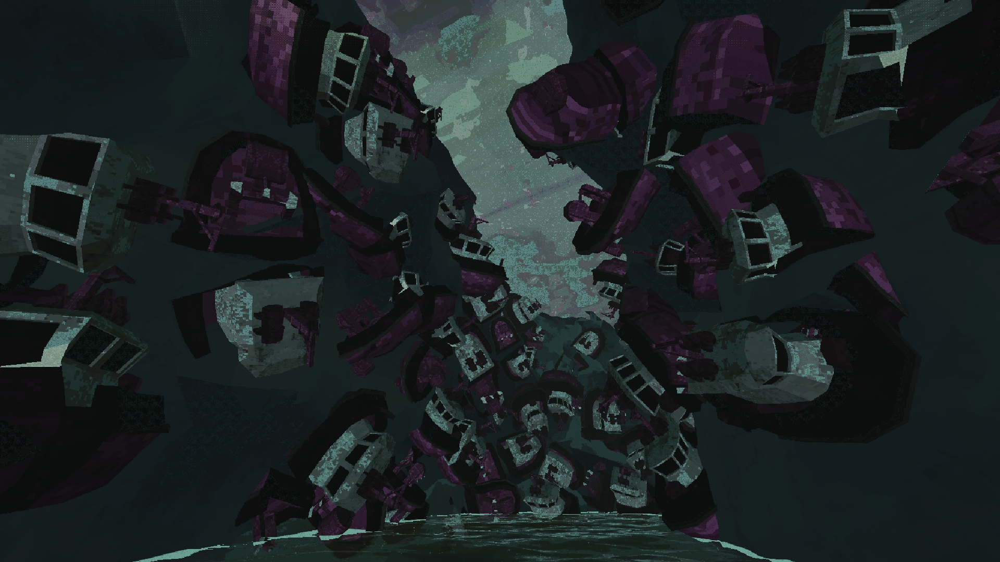
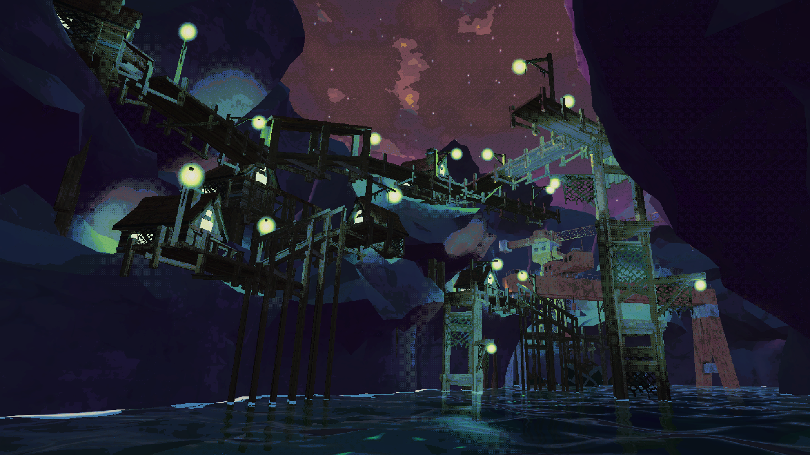
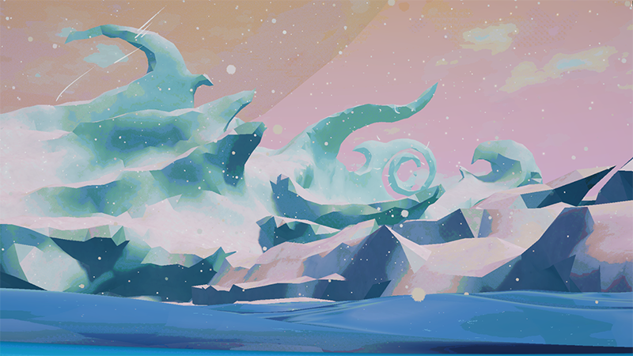
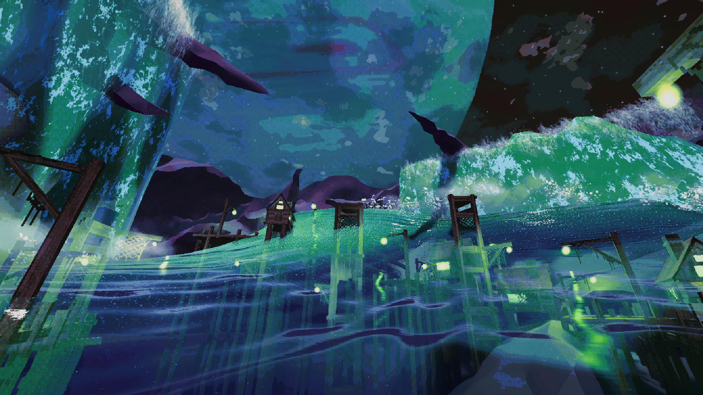

FISH³ FIRST CATCH is a free Standalone Prologue made from an expanded demo version of the game, released on Steam in November 2025.
The game is still in active development, and FIRST CATCH has received a 1.1 update transferring some of the quality of life upgrades from the main game in May 2026.
Like this 3D UI element, for example:
I have put a lot of work into the artstyle of FISH³ and some of the environments present in the levels I consider to be my best 3D Art work yet.




